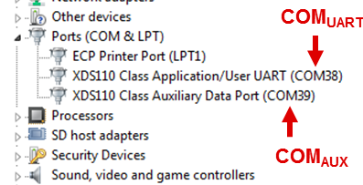

Overview
===========
This lab demonstrates the use of TI mmWave sensors to detect and recognize hand gestures.
<img src="images/twirl_intro.gif" width="400"/>
The unique range, velocity, and angle data from mmWave sensors can enable the detection of natural gestures.
This example shows how mmWave can be used to detect a finger twirling gesture and recognize the direction of motion.
The lab provides full source code, a CCS project, a MATLAB GUI, and runs on the TI mmWave sensor xWR14xx EVM.
Quickstart
===========
The quickstart contains:
* Precompiled binaries for flashing the device using Uniflash
* Visualizer as .exe
1. Hardware and Software Requirements
-----------
### Hardware
Item | Details
--------------------------|-----------------
Device | [xWR1442 EVM](http://www.ti.com/tool/IWR1442BOOST)
Computer | PC with Windows 7 or 10. If a laptop is used, please use the 'High Performance' power plan in Windows.
Micro USB Cable |
Power Supply | 5V, >2.5A with 2.1-mm barrel jack (center positive). The power supply can be wall adapter style or a battery pack with a USB to barrel jack cable.
### Software
Tool | Version | Required For |Details
----------------------------|---------------------------|---------------|--
mmWave Industrial Toolbox | Latest | - | Contains all files (quickstart, visualizer and firmware source files) related to mmWave Gesture Recognition Twirl lab.
MATLAB Runtime | 2017a (9.2) | Quickstart Visualizer | To run the quickstart visualizer the [runtime](https://www.mathworks.com/products/compiler/matlab-runtime.html) is sufficient.
Uniflash | Latest | Quickstart Firmware | [Download offline tool](http://www.ti.com/tool/UNIFLASH) or use [cloud version](https://dev.ti.com/uniflash/#!/)
[[+d Expand for mmWave Industrial Toolbox installation without Code Composer Studio
1. Navigate to the [TI Resource Explorer](http://dev.ti.com/tirex/#/?link=Software%2FmmWave%20Sensors%2FIndustrial%20Toolbox)
2. Click the download button. A .zip file will be downloaded.
<img src="images/industrial_toolbox_download.png" width="400"/>
3. Navigate to the .zip file. Right click and then select **Extract All...**. Do NOT use the default path. The path must be `C:\ti`.
<img src="images/extract.png" width="400"/>
4. Verify installation by navigating to view the mmWave Gesture Recognition Twirl lab files at `C:\ti\<mmwave_industrial_toolbox_install_dir>\labs\lab0009-gesture-recog-twirl`
+]]
[[+d Expand for mmWave Industrial Toolbox installation using Code Composer Studio
1. Open CCS
2. In the top toolbar, navigate to **View > Resource Explorer**
3. In the **Resource Explorer** side panel (not the main panel with "Welcome to.."), navigate to Industrial Toolbox at **Software > mmWave Sensors > Industrial Toolbox - <ver>**
4. With Industrial Toolbox selected, the main panel should show the Industrial toolbox landing page. Click on the **Download icon** in the right corner of panel.
<img src="images/industrial_toolbox_download.png" width="400"/>
5. Verify installation by navigating to view the mmWave Gesture Recognition Twirl lab files at `C:\ti\<mmwave_industrial_toolbox_install_dir>\labs\lab0009-gesture-recog-twirl`
* +]]
2. Physical Setup
-----------
The EVM should be positioned with antenna oriented on the top side and facing gesturing hand. The lab is configured to detect gestures within 0.35m of the EVM.
3. Flash the EVM
-----------
* Power on the EVM using a 5V/2.5A power supply.
* Flash the following image using **Uniflash**
Image | Location
--------------------------|------------
Meta Image 1/RadarSS | `C:\ti\<mmwave_industrial_toolbox_install_dir>\labs\lab0009-gesture-recog-twirl\lab0009-gesture-recog-twirl-prebuilt_binaries\xwr12xx_xwr14xx_radarss.bin`
Meta Image 2/MSS | `C:\ti\<mmwave_industrial_toolbox_install_dir>\labs\lab0009-gest-recog-twirl\ab0009-gesture-recog-twirl-prebuilt_binaries\xwr14xx_gesture_twirl_mss.bin`
[[+d Expand for help using Uniflash
* Connect the EVM to your PC and check the COM ports in **Windows Device Manager**
* The EVM exports two virtual COM ports as shown below:
* XDS110 Class Application/User UART (COM UART): Used for passing configuration data and firmware to the EVM
* XDS110 Class Auxiliary Data Port (COM AUX): Used to send processed radar data output

{{b Note the COM UART and COM AUX port numbers, as they will be used later for flashing and running the lab.}}
* Put the EVM in flashing mode by connecting jumpers on **SOP0** and **SOP2** as shown in the image. Then power cycle the EVM with **SW2**.
<img src="images/flash_jumpers.png" width="300"/>
* Open the **UniFlash tool** ([Download offline tool](http://www.ti.com/tool/UNIFLASH) or use [cloud version](https://dev.ti.com/uniflash/#!/) )
* In the New Configuration section, locate and select the appropriate device (IWR1442)
* Click Start to proceed
* Click the **Settings & Utilities** tab. Under setup, fill the **COM Port** text box with the Application/User UART COM port number (COM UART) noted earlier.
* In the **Program** tab, browse and locate the images (.bin file) as specified in the above table in the lab directions.
* **Power cycle** the device and click on **Load Images**
[[g! Successful Flash Procedure
UniFlash’s console should indicate: [SUCCESS] Program Load completed successfully
]]
* Power off the board and **remove only SOP2 jumper**
[[y SOP2 Removed?
Ensure that the jumper has been removed and the EVM power cycled. This puts the board back in functional mode.
]]
+]]
4. Run the Lab
-----------
To run the lab, launch and configure the visualizer.
### 1. Launch the visualizer:
* Navigate to `C:\ti\<mmwave_industrial_toolbox_install_dir>\labs\lab0009-gesture-recog-twirl\lab0009-gesture-recog-twirl-quickstart\gesture_recog_twirl_gui.exe`
* Click`gest_recog_twirl_gui.exe` to run the visualizer
{{b Note: Matlab Runtime Engine 9.2 is required. GUI will prompt for installation if necessary or [install now](https://www.mathworks.com/products/compiler/matlab-runtime.html)}}
### 2. Configure Visualizer
* Within 10-20sec a list box dialog with found COM ports will appear. (If the figure does not pop up check the taskbar for the icon and click to bring up the dialog).
* Select the pair of COM ports corresponding to the EVM and click OK.
* After 10-20sec the GUI should appear.
5. Understanding the Output
-----------
* The GUI is comprised of two windows.
1. A subset of the data streams from the radar used by the gesture recognition algorithm
1. Example use cases of gesture to control various applications:
* Image zoom control of MRI stack
* Volume level control
* Perform Twirl Gesture
* Hold pointer finger vertically in front of EVM
* Trace a clockwise or counterclockwise circle with the fingertip
* The gesture recognition algorithm supports gestures up to a distance of 0.4m of the EVM
* Clockwise Twirl = +
<img src="images/twirl_cw.gif" width="400"/>
* Counterclockwise twirl = -
Developer's Guide
===========
Build the Firmware from Source Code
-----------
### 1. Software Requirements
Tool | Version | Required For |Details
----------------------------|---------------------------|---------------|--
mmWave Industrial Toolbox | Latest | - | Contains all files (quickstart, visualizer and firmware source files) related to mmWave Gesture Recognition Twirl lab
TI mmWave SDK | 1.02.00.05 | Firmware Source Code | The latest [TI mmWave SDK](http://software-dl.ti.com/ra-processors/esd/MMWAVE-SDK/latest/index_FDS.html) and all the related tools are required to be installed as specified in the mmWave SDK release notes
Code Composer Studio | 7.2+ | Firmware Source Code | [Download link](http://processors.wiki.ti.com/index.php/Download_CCS#Code_Composer_Studio_Version_7_Downloads) Note: CCSv6.x cannot be used
To verify proper installations, navigate to **`C:\ti`** and ensure that the following tools have been installed in the *EXACT* directory specified.
Tool | Version | Folder Path | Download link & Details
----------------|-------------|----------------------------------|----------------
CCS | 7.3 or later| `C:\ti\ccsv7` | [Download link](http://processors.wiki.ti.com/index.php/Download_CCS#Code_Composer_Studio_Version_7_Downloads) Note: CCSv6.x cannot be used
TI SYS/BIOS | 6.53.2.00 | `C:\ti\bios_6_53_02_00` | Included in mmwave sdk installer
TI ARM compiler | 16.9.6.LTS | `C:\ti\ti-cgt-arm_16.9.1.LTS` | Included in mmwave sdk installer
XDC | 3.50.04.43 | `C:\ti\xdctools_3_50_04_43_core` | Included in mmwave sdk installer
C64x+ DSPLIB | 3.4.0.0 | `C:\ti\dsplib_c64Px_3_4_0_0` | Included in mmwave sdk installer
C674x DSPLIB | 3.4.0.0 | `C:\ti\dsplib_c674x_3_4_0_0` | Included in mmwave sdk installer
C674x MATHLIB | 3.1.2.1 | `C:\ti\mathlib_c674x_3_1_2_1` | Included in mmwave sdk installer
mmWave device support packages | 1.5.3 or later | - | Upgrade to the latest using CCS update process (see SDK user guide for more details)
TI Emulators package | 6.0.0576.0 or later | - | Upgrade to the latest using CCS update process (see SDK user guide for more details)
### 2. Import Lab Project
For the gesture recognition twirl lab, the MSS project for the R4F core needs to be imported to CCS and compiled to generate firmware for the IWR1443.
* Start CCS and setup workspace as desired.
* Import the projects below to CCS using either TI Resource Explorer in CCS or CCS Import Projectspecs method:
* **gesture_twirl_14xx_mss**
[[+d Expand for details on importing via TI Resource Explorer in CCS
* In the top toolbar, navigate to **View > Resource Explorer**
* In the **Resource Explorer** side panel (not the main panel with "Welcome to.."), navigate to **Software > mmWave Sensors > Industrial Toolbox - <ver> > Labs > Gesture Recognition - Twirl Example**
* Under the expanded **Gesture Recognition Twirl Example** folder, there should be the CCS Project*.
* Click on the project, which should open the project in the right main panel, and then click on the Import to IDE button <img src="images/import_ide_icon.png" width="40"/>.
+]]
[[+d Expand for details on importing via CCS Import Projectspecs
* In the top toolbar, navigate to **Project > Import CCS Projects...**
* With the **Select search-directory** option enabled, click **Browse...**, navigate to the **lab0009-gesture-recog-twirl** folder at `C:\ti\<mmwave_industrial_toolbox_install_dir>\labs\lab0009-gesture-recog-twirl`, and then click **OK**.
* Under **Discovered projects**, select **gesture_twirl_14xx_mss** (ignore any other projects), then click **Finish**.
+]]
[[g! Successful Import to IDE
After using either method, the project should be visible in **CCS Project Explorer**
<img src="images/twirl_pjt_impt.png" width="300"/>
]]
[[b! Project Workspace
When importing projects to a workspace, a copy is created in the workspace. All modifications will only be implemented for the workspace copy. The original project downloaded in mmWave Industrial Toolbox is not touched.
]]
### 3. Build the Lab
#### **Build MSS Project**
The DSS project must be built before the MSS project.
With the **geesture_twirl_mss** project selected in **Project Explorer**, right click on the project and select **Rebuild Project**. Selecting **Rebuild** instead of **Build** ensures that the project is always re-compiled. This is especially important in case the previous build failed with errors.
[[g! Successful MSS Project Build
In the **Project Explorer** panel, navigate to and expand **gesture_twirl_xwr14xx_mss > Debug** directory. The project has been successfully built if the following files appear in the **Debug** folder:
* xwr14xx_gesture_twirl_mss.bin
]]
[[r! Build Fails with Errors
If the build fails with errors, please ensure that all the [prerequisites](#software) are installed as mentioned in the mmWave SDK release notes.
]]
### 4. Execute the Lab
There are two ways to execute the compiled code on the EVM:
* Deployment mode: the EVM boots autonomously from flash and starts running the bin image
* Using Uniflash, flash the **xwr14xx_gesture_twirl_lab.bin** found at `<PROJECT_WORKSPACE_DIR>\gesture_twirl_14xx_mss\Debug\xwr14xx_gesture_twirl_lab.bin`
* The same procedure for flashing can be use as detailed in the Quickstart [Flash the Device](#1-flash-the-device) section.
* Debug mode: enables connection with CCS while lab is running; useful during development and debugging
[[+d Expand for help with Debug mode:
The CCS debug firmware (provided with the mmWave SDK) needs to be flashed once on the EVM.
* CCS Debug method is enabled by flashing the CCS Debug Firmware (provided with the mmWave SDK) using the methods covered in the Quickstart [Flash the Device](#1-flash-the-device) section.
* Use the following image instead
Image | Location | Comment
--------------------------|----------------------------|------------------------
Meta Image 1/RadarSS | `C:\ti\mmwave_sdk_<ver>\packages\ti\utils\ccsdebug\xwr16xx_ccsdebug.bin` | Provided with the mmWave SDK
After the CCS debug firmware has been flashed, connect the EVM to CCS
* Create a target configuration (skip to "Open the target..." if config already created previously in another lab for xwr14xx)
* Go to **File > New > New Target Configuration File**
* Specify an appropriate file name (ex: IWR16xx.ccxml) and check "**Use shared location**". Click **Finish**.
* In the configuration editor window:
* Select **Texas Instruments XDS110 USB Debug Probe** for Connection
* Select **IWR1443** device as appropriate in the Board or Device text box.
* Press the **Save** button to save the target configuration.
* [Optional]: Press the **Test Connection** button to check the connection with the board.
* Open the target configuration window by going to **View > Target Configurations**.
* Under **User Defined** configurations the target configuration previously created should appear.
* Right click on the target configuration and select **Launch Select Configuration**. The target configuration will launch in the **Debug Window**.
<img src="images/target_config.png" width="350"/>
* Connect
* Select probe and then right click and select **Connect Target**
<img src="images/connect_target_2.png" width="350"/>
* Load the binary
* With the target connected, click **Load** button in the toolbar.
* In the **Load Program** dialog, press the **Browse Project** button .
* Select **xwr14xx_gesture_twirl_mss.xe674** found at `<PROJECT_WORKSPACE_DIR>\xwr14xx_gesture_twirl_mss\Debug\xwr14xx_gesture_twirl_mss.xe674` and press **Ok**.
* Press **Ok** again in the **Load Program** dialog.
* Run the binary
* Press the **Run/Resume** button <img src="images/run_resume_icon.png" width="30"/>
* The program should start executing and generate console output.
[[g! Successful Run Binary
If binary is running correctly, the Console will include the “CLI is operational” message which indicates that the program is ready and waiting for the sensor configuration.
]]
+]]
After executing the lab using either method, the lab can be visualized using the [Quick Start GUI](#2-run-the-lab-visualizer) or continue to working with the GUI Source Code.
Visualizer Source Code
-----------
{{y Working with and running the Visualizer source files requires a MATLAB License not just the MATLAB Runtime Engine}}
* Open run_demo_dbl_twirl.m, found at: `<mmWave Industrial Toolbox install dir>\labs\lab0009-gesture-recog-twirl\lab0009-gesture-recog-twirl_gui\run_demo_twirl.m`
* Running the .m file results in the same GUI as the Quick Start GUI; please refer to the section for details.
* Files of interest:
* plot_gesture_dbl_twirl.m: Data streaming and processing for twirl detection
Need More Help?
===========
* Find answers to common questions on [mmWave E2E FAQ](https://e2e.ti.com/support/sensor/mmwave_sensors/w/wiki)
* Search for your issue or post a new question on the [mmWave E2E forum](https://e2e.ti.com/support/sensor/mmwave_sensors/f/1023)